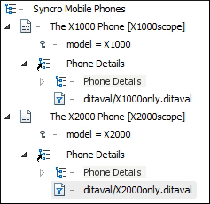

Working with DITA 1.3 Branch Filtering
DITA 1.3 allows you to use a mechanism called Branch Filtering that enables you to set filtering conditions for specific branches of a DITA map. This makes it possible for multiple conditional profiles to be applied within a single publication, each time with a different filter.
Branch Filtering Use-Case
Suppose that you sell two models of a mobile phone and you need to create a brochure for each model. You want both brochures to have the same structure and most of the content is the same for both brochures. The only differences are in the values for certain details (for example, the model name, size dimensions, battery life, etc.) Therefore, it would be helpful if you could use the same topic and reference it twice in the same map, with each reference using different filtering conditions. In DITA 1.2, this is not possible since you can only apply one DITAVAL filter to a map. However, with the DITA 1.3 Branch Filtering mechanism, you can reuse content multiple times within the same map, each time using different filters.
How to Use Branch Filtering in Oxygen XML Editor
- The support for DITA 1.3 must be enabled in the DITA preferences page.
- Assuming you have already defined your profiling attributes, create a DITAVAL filter file.
- Insert a reference to the DITAVAL filter file in the DITA map:
- Right-click the DITA map reference in the DITA Maps Manager and select .
- Select the DITAVAL file.
- Click Insert and Close.
-
Save the DITA map.
Result: You can now see the ditaval files referenced in the DITA Maps Manager and when you transform the DITA map, filtered content will be reflected in the published output.
Figure 1. Branch Filtering in DITA Maps Manager 
Resources
- You can find a more detailed example and download samples for reuse possibilities based on key scopes in the DITA 1.3 Branch Filtering - Next Generation of Reuse blog post.
- You can also watch our DITA 1.3 video tutorial to see how branch filtering can be used in Oxygen XML Editor.